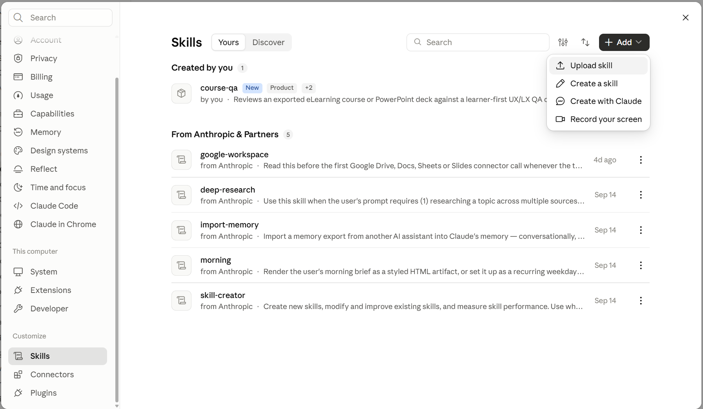
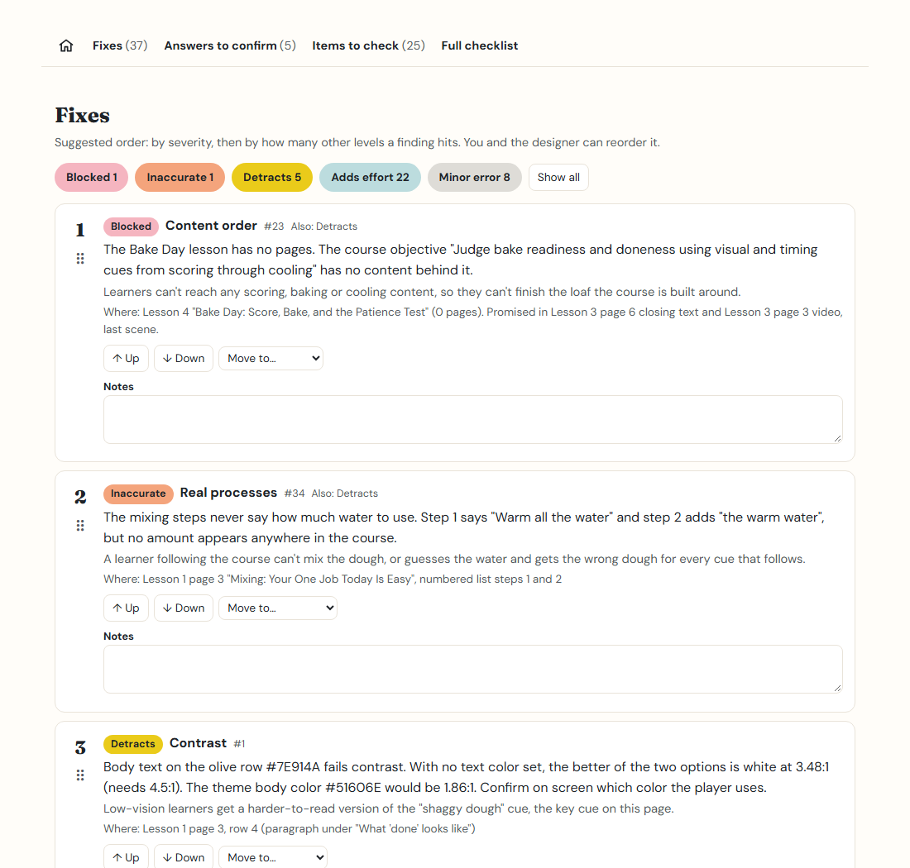

Getting started
You don't need to code to use this. If you use the Claude desktop app or claude.ai, setup is one upload. Claude Code users have their own section below.
In the desktop app or claude.ai · In Claude Code · Reading your report · Common questions
Before you start
Have your course file ready:
- An eLearning course: in your authoring tool, export or publish it as a web (HTML) package. You'll get a .zip file. Don't unzip it. So far it has been tested with one authoring tool's export, so exports from other tools may not be read fully. If it doesn't recognize your export, it tells you and asks before trying.
- A slide deck: the PowerPoint .pptx file as it is.
It needs the exported file. You can't give it a link to a course, such as a review link or a share link from your authoring tool. (It does visit the links inside a course, to check that they work.)
In the Claude desktop app or claude.ai
You'll need a paid Claude plan. It was tested on Claude Pro.
- Download the skill. Get
course-qa.zipfrom the Releases page. Leave it zipped. - Upload it to Claude. In Claude, open Settings. Under Customize,
choose Skills, then Add → Upload skill, and pick the zip. Skills belong to your
account, so uploading once makes it available in both the desktop app and claude.ai.

Settings → Skills (under Customize) → Add → Upload skill. Select the image to see it full size. - Turn on code execution. In Settings → Capabilities, make sure code execution is on. The skill runs a few small scripts while it reviews.
- Start a review. Start a new chat, attach your course .zip or .pptx, and type "Review this course with the course-qa skill."
- Answer one optional question. Claude asks if there's anything it should know, like key vocabulary, product names or who the learners are. Answer, or type "skip."
- Let it work. It tells you how many words the course has and roughly how many tokens the review will use. A three-lesson course took 4 to 6 minutes in testing. To cancel, click stop.
- Download your report. When it's done, the report opens in a preview panel. Download the HTML file and open it in your browser to add notes, reorder findings and export the CSV; those only work in the downloaded copy.
You may see permission requests. Claude asks before it visits the links in your course, to check they work. It may also ask to run commands in its workspace while it builds the report. Those only touch Claude's own working files, not your computer.
In Claude Code
Claude Code runs in a terminal. If you haven't used it, the desktop app path above is easier and gives the same results.
- Install Node.js. Download the LTS version from nodejs.org. The skill uses it for its scripts.
- Install the skill. In Claude Code, run these two commands:
Or copy the/plugin marketplace add chickadee368/learner-first-qa /plugin install learner-first-qa@learner-first-qaplugins/learner-first-qa/skills/course-qafolder from the repo into your skills folder:~/.claude/skills/on a Mac, orC:\Users\<you>\.claude\skills\on Windows. - Start a review. Open Claude Code in the folder that holds your course file. Type
/learner-first-qa:course-qaif you installed the plugin, or/course-qaif you copied the folder. (Plugin commands always start with the plugin's name.) Then give it the course file's name. - Answer the optional question, or type "skip." To cancel while it works, press Esc.
- Open your report. The HTML report and CSV are saved in the same folder. Running the same course again on the same day adds a number to the file name, so earlier reports are never replaced.
Tested on Windows. It should work on a Mac, but that hasn't been tested yet.
Reading your report

Start with "Your next steps"
The box at the top says whether the course is ready to launch and what's on your plate: fixes to make before launch, answers to confirm, and items to check yourself.
Three lists
- Fixes are problems the tool found, ordered by severity. Click a colored pill to show only that level. Click it again to show everything.
- Answers to confirm are checks the tool answered but can't be sure about. Read its answer and agree or correct it.
- Items to check can't be judged from the files, like keyboard use or how a screen reader sounds. Each one says what to look at.
Make it yours
Reorder any list with the Up and Down buttons, the "Move to" menu, or by dragging the handle. Add notes to any item. Your notes and order are saved in your browser, on that computer only.
Move it to your board
Click Download CSV to get every task, in your order, with your notes. Trello, Jira, Asana, Notion and Monday can all import it.
In Notion: import the CSV, add a Board view, and group it by Type to get lanes for Fix, Confirm and Check. Notion imports columns as text, so change Type (or Level) to a Select property first.
Common questions
Why are the results a little different each time I run it?
An AI reviewer makes some judgment calls fresh each run. The big problems and the contrast results stay the same, but wording and some severity levels can shift. That's why the report is built for a person to validate.
Can I review a confidential course?
Your course content is sent to Claude as part of the review, the same as anything you share in a Claude chat. Check your organization's rules first. The skill itself doesn't track usage or report back to anyone.
I can't find Settings → Skills.
In Settings, look under the Customize heading for Skills. Claude's settings change from time to time, so the exact spot may move.
Does it work in the Claude mobile app?
Uploaded skills show up there, but the mobile app hasn't been tested. Attaching a course and reading the report are much easier on a computer.
How many tokens does it use?
It shows an estimate at the start, based on how much text the course has. A three-lesson course of about 9,000 words was estimated at about 45,000 tokens.